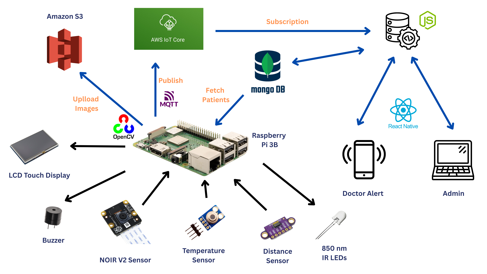
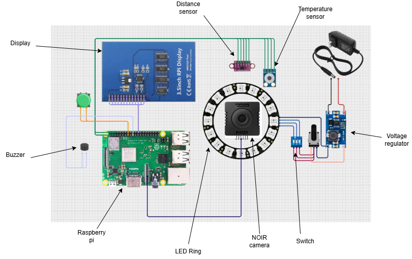

About Vescueye
Problem Definition
In microsurgical procedures, especially in oral and maxillofacial surgeries, monitoring blood flow and flap viability is critical. Traditional methods are either invasive, require expensive equipment, or lack real-time monitoring capabilities, increasing the risk of flap failure and complications.
Proposed Solution
Vescueye is a non-invasive, real-time blood flow monitoring system using near-infrared imaging and temperature sensing. It helps surgeons monitor tissue perfusion remotely, using an embedded system connected to the cloud and a mobile interface for continuous observation and timely interventions.
Key Features
Real-Time Monitoring
Continuously tracks blood flow and tissue temperature during surgical procedures using NIR imaging and thermal sensors.
Non-Invasive
Eliminates the need for invasive equipment, reducing patient risk and improving comfort.
Cloud Integration
Stores data securely in the cloud for remote access, allowing doctors to monitor flap health anytime, anywhere.
User-Friendly Interface
Intuitive mobile and web applications for doctors and admins to easily monitor and interpret patient data.
Simple Hardware Design
Features a straightforward and robust hardware design for ease of use and maintenance.
Easy Doctor and Patient Management
Streamlines the process of managing doctor and patient data through an intuitive system.
Near-Infrared Imaging & Vein Detection
Vescueye uses near-infrared (NIR) light, typically around 850 nm, to illuminate the skin. Human tissue reflects most of the IR light, but oxygenated hemoglobin in veins absorbs it, making veins appear darker under NIR imaging.
A 700 nm long-pass filter blocks visible light, allowing only IR to pass. This enhances contrast between veins and surrounding tissue for accurate, non-invasive visualization.
High Level Architecture
Components Used
System Component Communication
The Vescueye system integrates hardware, cloud services, and applications to monitor facial artery conditions using near-infrared imaging and thermal sensing. Below is a description of how each component interacts:
- Raspberry Pi 3B: Captures thermal and near-infrared images using the Pi NOIR camera and MLX90614 temperature sensor. It processes the data locally and sends them to the cloud.
- AWS IoT Core: Acts as the MQTT broker to securely receive sensor data from the Raspberry Pi. It routes this data to other AWS services for further processing and storage.
- AWS S3: Stores captured image data and logs securely in cloud storage for access by web and mobile applications.
- Node.js Server: Acts as the backend API that handles requests from web and mobile apps. It processes patient and doctor data, fetches image and temperature data from S3, and stores metadata in MongoDB.
- MongoDB: Stores structured data such as patient records, doctor profiles, temperature history, image URLs, and timestamps.
- Web Admin Interface: Allows system administrators to manage patients, doctors, and device status using a secure web dashboard.
- Mobile Doctor Application: Provides doctors with a mobile interface to view patient data, monitor blood flow and temperature in real-time, and receive alerts.
- Patient Web Portal: Allows patients to view their historical data and progress, promoting engagement and transparency.
Circuit Design
Implementation
Hand Test Output


Enhanced Image Sample


Vein Continuity Scoring Method
To quantitatively assess flap viability, VescuEye implements a Vein Continuity Scoring Method. This method processes the NIR images through a series of steps to determine the health of the blood vessels.
- Color Filtering: Extracts relevant color channels from the NIR image to highlight vein-like structures.
- Thresholding: Converts the image to binary, separating veins (darker pixels) from background (lighter pixels) based on a calculated threshold.
- Morphological Filtering: Applies operations like erosion and dilation to remove noise, fill small gaps in veins, and smooth contours, enhancing vessel continuity.
- Vein Continuity Score Calculation: Based on the processed image, an algorithm calculates a score that represents the continuity and density of the visible vein network, indicating blood flow integrity.
Final Look (CAD Designs)
Testing & Validation
Hardware Testing
-
Component Integration Tests:
- Camera & LED Synchronization: Verified proper operation of Pi NOIR camera with 850nm IR LEDs for consistent illumination and image capture.
- Sensor Accuracy: Calibrated MLX90614 temperature sensor against a professional thermometer for accurate readings. Tested VL53L0X distance sensor for precise distance measurements.
- Raspberry Pi Stability: Monitored system performance and resource utilization of Raspberry Pi 3B under continuous data capture and processing loads.
- Power Consumption Analysis: Measured power draw of the complete device to ensure extended battery life and efficient operation.
- Environmental Resilience: Tested device functionality under varying ambient temperatures and lighting conditions to simulate real-world surgical environments.
Software Testing
-
Unit Testing (Jest):
- Image Processing Algorithms: Verified the accuracy of color filtering, thresholding, and morphological filtering functions for vein enhancement.
- Vein Continuity Scoring: Validated the algorithm's ability to calculate a consistent and meaningful score based on processed images.
- Data Handling: Ensured proper formatting and conversion of sensor data before transmission to AWS IoT Core.
-
API Testing (Postman):
- Endpoint Validation: Tested all Node.js API endpoints for correct data retrieval, creation, update, and deletion operations (patients, doctors, historical data).
- Authentication & Authorization: Verified secure access controls for different user roles (admin, doctor, patient).
- Error Handling: Assessed API responses for various error scenarios (e.g., invalid input, missing data, server errors).
-
Integration Testing:
- End-to-End Data Flow: Tracked data from sensor capture on Raspberry Pi, through AWS IoT Core and Node.js backend, to display on web and mobile interfaces.
- Cloud Service Connectivity: Ensured seamless communication between Raspberry Pi, AWS IoT Core, S3, and MongoDB.
- User Acceptance Testing (UAT): Conducted pilot tests with potential users (medical professionals) to gather feedback on usability, functionality, and overall satisfaction.
Project Budget
| Category | Item/Description | Quantity | Unit Cost (LKR) | Total Cost (LKR) |
|---|---|---|---|---|
| Hardware | Raspberry Pi 3B | 1 | 15,000 | 15,000 |
| Pi NOIR Camera Module | 1 | 7,500 | 7,500 | |
| 850nm IR LED (High Power) | 4 | 1,500 | 6,000 | |
| MLX90614 Temperature Sensor | 1 | 3,000 | 3,000 | |
| VL53L0X Distance Sensor | 1 | 2,500 | 2,500 | |
| Power Supply & Cables | 1 | 3,000 | 3,000 | |
| Custom PCB & Fabrication | 1 | 8,000 | 8,000 | |
| Enclosure/CAD 3D Printing | 1 | 6,000 | 6,000 | |
| Software/Cloud Services | AWS IoT Core (estimated usage) | N/A | 5,000 | 5,000 |
| AWS S3 (estimated storage) | N/A | 2,000 | 2,000 | |
| MongoDB Atlas (cloud tier) | N/A | 0 (Free Tier) | 0 | |
| Miscellaneous | Prototyping Materials (wires, resistors, etc.) | N/A | 4,000 | 4,000 |
| Testing Equipment (multimeter, etc.) | N/A | 5,000 | 5,000 | |
| Contingency (10%) | N/A | 7,050 | 7,050 | |
| Total Estimated Project Cost | 74,050 LKR | |||
Our Team

Dr. Isuru Nawinne
Project Supervisor

T.L.B Mapagedara
Team Member

R.J Yogesh
Team Member

D.M.T.S. Dissanayake
Team Lead

W.A.I. Hasaranga
Team Member

H.A.M.T Prasadinie
Team Member